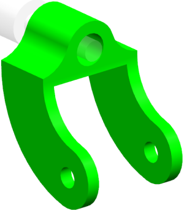
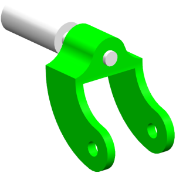

为叉创建一个部件间引用表达式
-
将 des04_caster_fork 设为工作部件。
-
确保引用集是设置为 MODEL.
提示
做这个的其中一种方法是双击 des04_caster_fork 并查看替换引用集列表，如果 MODEL 可选，就选择它。

-
打开表达式对话框。
-
找到并选择 shaft_dia 表达式。
当前值为0.781。
-
点击创建间引用
 。
。 -
在选择部件对话框中，选择 des04_caster_ipe 并点击确定。
注意
即使部件名框中显示的是 des04_caster_ipe，您仍然需要从列表中选择部件。
-
在创建部件间引用对话框中，选择 theDia= 0.5，并点击确定。
-
在表达式对话框中新公式的尾部，键入+。
名称
shaft_dia
公式
“des04_caster_ipe”::theDia+
-
点击创建部件间引用
。 -
在选择部件对话框中，双击 des04_caster_ipe。
-
在创建部件间引用对话框中，选择 tol= 0.01并点击确定。
-
查看新的表达式公式。
名称
shaft_dia
公式
“des04_caster_ipe”::theDia+”des04_caster_ipe”::tol
-
点击确定。
des04_caster_shaft 的直径将更新到新的直径值，并且带有必要的公差。
